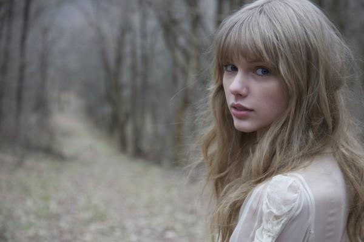

明星自创香水品牌能火吗？
艺人代言化妆品早已不是新鲜事，但有些艺人却早已不满足于仅仅为品牌站站台、露个脸，而是选择自己做老板，跨界进入化妆品行业创业的大军。近期，继林志颖推出胶原蛋白美容产品、刘嘉玲推出同名面膜品牌、金莎推出自创香水品牌之后，连相声名嘴郭德纲也宣布推出"大脸面膜"，高调进军美妆产业。对此，行业内虽然比较看好，但消费者却疑虑难消：明星跨界做出来的化妆品，到底能"靠谱"吗？

相比其他明星，相声演员郭德纲跨界做化妆品的消息还是让人有些惊讶。他除了代言某品牌的"大脸面膜"，实际还是该品牌的合伙人之一，又做代言又当老板，也是蛮拼的。
近年来进军化妆品界的明星也有不少，方式也是五花八门。同样选择做面膜的还有著名影星刘嘉玲，她亲自开创的美妆品牌就以"嘉玲"命名。林志颖借微博推广自己的胶原蛋白美容产品，宣传起来不遗余力。羽泉组合推出同名"羽泉"男性护肤品，着眼男性细分市场。
欧美明星跨界做美妆产品则更早奉行，且多集中在香水领域。大卫·贝克汉姆不仅曾与妻子维多利亚联名推出香水产品，在宣布退役之后又推出了全新的个人香水Classic。流行教母Lady Gaga在2013年发行了首支黑色香水Fame。美国乡村音乐小天后Taylor Swift迄今已推出了3款个人香水。Justin Bieber曾推出Someday女士淡香精，在B宝强大粉丝团的支持下，这款香水在沃尔玛长期占据销售冠军的宝座。流行歌后Rihanna推出了Reb"l Fleur女士香水。"水果姐"Katy Perry是明星香水领域的一匹黑马，2010年圣诞节前她推出的第一支个人香水Purr即引起市场的热烈反响。麦当娜也有推出Truth or Dare女士香水。Jennifer Aniston也有个人香水Lolavie女士香水。
此外，天后麦当娜今年还正式在日本市场推出MDNA Skin换肤磨砂膏、精华液以及面膜系列。真人秀当红明星卡戴珊三姐妹在2012年创立了自己的美容品牌Kardashian Beauty。超模米兰达可儿也在2009年创办Kora Organics绿色生态美容品牌。

明星跨界条件得天独厚明星缘何热衷于跨界化妆品行业呢？应该说他们拥有许多得天独厚的条件。
例如，香港明星洪咏霖不仅担任源自法国的保养护肤品牌"依卡亚"钻白系列产品代言人，为该品牌塑造美丽形象，更深度参与到品牌的创业过程中，"依卡亚"代理商甚至直言："没有洪咏霖就没有依卡亚，连依卡亚这个名字都是她亲自取的。"洪咏霖则向记者透露，她是在法国旅游时遇到某化妆品实验室的专家，双方对于皮肤保养的想法一拍即合，很快便决定要将其引进台湾及中国大陆市场，然后这家台湾公司才作为代理商参与进来。洪咏霖决定亲自担任产品代言人，合约条件之一，就是她制定所有产品广告和包裝都由她自己亲自设计。她还信心满满地表示，曾获得过多个国际性设计大奖的她对于这类设计工作十分得心应手。
她的合伙人评价认为，洪咏霖作为一个娱乐明星，所拥有的美貌、名气和娱乐圈资源自不必说，更难能可贵的是她擅长运用浪漫元素加入个人设计，同时也懂得及时把握市场机会，并且她本人还具备专业、干练以及八面玲珑的商业基因，这一切对于依卡亚品牌的未来发展前景都将十分有利。
明星做化妆品"靠谱"吗？
郭德纲在面对媒体时曾自嘲自己"脸大所以需要定制大号的面膜"，而网友则纷纷吐槽"能敷成林志颖吗？"这也透露出消费者对于明星跨界做美妆的真切忧虑。
"明星做化妆品，怎么可能专业？""自己的产品自己代言，这不就是王婆卖瓜自卖自夸？"有不少消费者担心，明星跨界做化妆品"不靠谱"。
不过，在业内人士看来，消费者的担忧不无道理，但也不必过虑。"明星也代言别的品牌的化妆品，他们很可能根本不知道那些产品是如何研发生产的；而现在他们自己做化妆品，起码了解更多；所以怎么能认为后者的可信度比前者低呢？"某初创面膜品牌的负责人这样说，"当然，前面说的只是个理论推测，但如果明星们不爱惜自己羽毛，那自己的好名声给坏产品作保，出了问题就不要怪市场无情了。这也已经有先例。对于消费者来说，不要迷信明星，保持客观理性，才是最明智。"